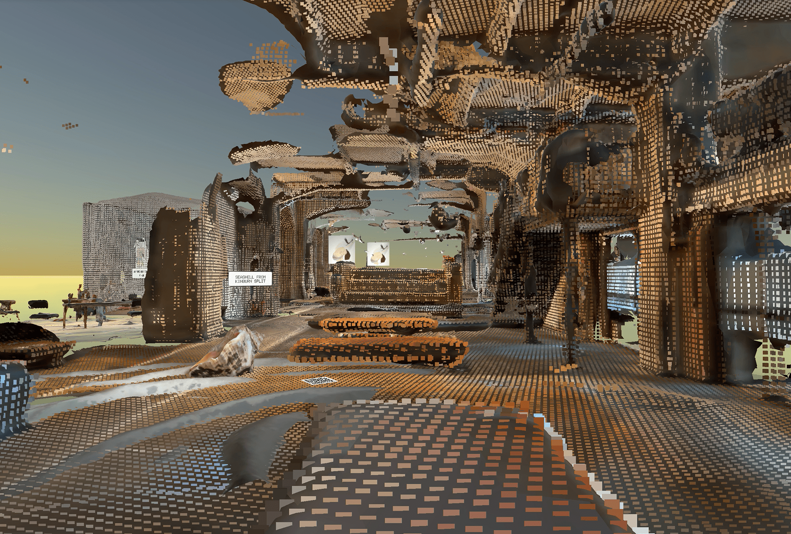
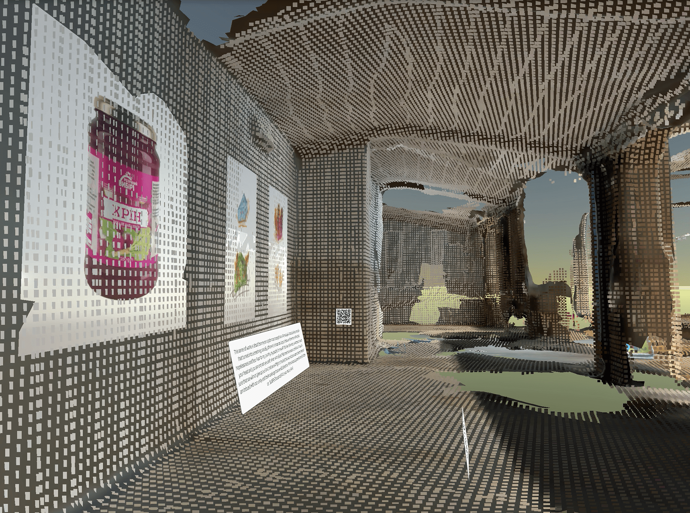
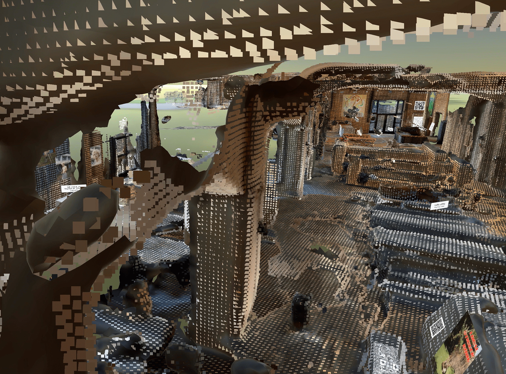
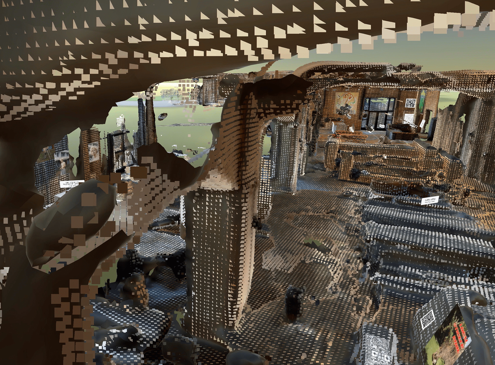
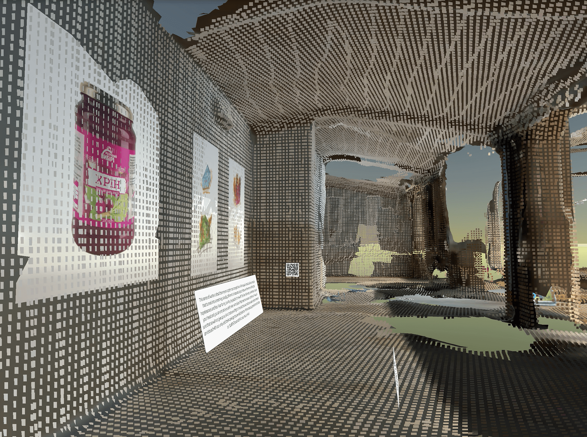
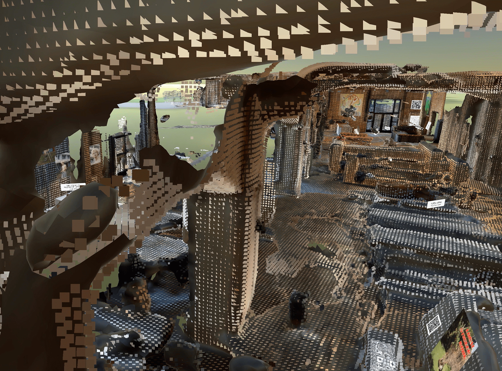

Ukrainian Metaverse Culture Station 2022

The Technological and Curatorial Exploration of a Space Near Ostbahnhof: Artist Statement Veronika Romaniuk
The collaborative project of digital Postbahnhof has been an experience in curation, coding, and collaborative organization, which has felt like a puzzle, but also, overwhelmingly, a natural flow. The approach that I fostered for this project is one of acceptance and trust. When I first came across the space, I was excited by the endless possibilities in virtually filling the space with objects and art. The theme of the show would undoubtedly be Ukraine, but what varieties of object could come to fill the space?
 “… the greatest creations of architecture are not so much the product of individual labour, rather the product of social endeavour, they are things simply cobbled together by working people, rather than inspired inventions of the creative genius, they are the traces a nation leaves behind, the strata deposited by the centuries, the lees of successive evaporations of human society, in short they are a kind of geological formation”. Victor Hugo
Hugo’s mindset is similar to my own vision for the project. I invited people to bring in items from Ukraine that have a story. Simultaneously, I reached out through social media to the Ukrainian community at large, inviting them to send me art that could be exhibited digitally. I also hosted a workshop on the 9th of May (a politically heated day), during which we created a composition of flowers and Ukrainian artifacts, and painted it. Interestingly, the three-unfamiliar people who showed up were from Russia, but were artistically active in supporting Ukraine.
The dichotomy of inclusivity versus national identity is an undercurrent of the show. Where does responsibility lie to represent (or not represent) certain identities? I see art as an inclusive politic of change that can explore all cultures and pave a shared future. However, this came in clash with the Ukrainian identity of the group that I was working with. I find solace in an inherent potential egalitarianism of digital spaces.
“When it comes to involvement in the curatorial process, however, the audience still is a neglected element in the equation. With its inherent flexibility and possibilities for customization, the digital medium potentially also allows for an involvement of the audience in the curatorial process.” (Paul 2007)
I see a future in which open conversation and design collaboration is an inherent part of any and all spaces we inhabit. The virtual world can become a platform for discourse about not only digital, but also physical spaces. While many in the Metaverse are creating their own spaces (which in my opinion often end up looking artificial, try-hard, and condescending), this projects is an experiment in digitizing physical space and accepting the rough and the naturally obscure. While the quality of the scans is far from realistic, it creates a surrealist landscape with is rugged and perfect to reflect the atmosphere of present-day Ukraine. New media can become a tool of collaborative storytelling, in which the curator becomes the artist, or the artist becomes the curator. A spirit of experimentation was fundamental in embarking on this project, so as to work with the new technology and not against it. Particularly with this medium, if one gets bogged down in the details, it can be a lengthy and exhausting rabbit hole (which I certainly fell into a couple of times). In this new digital age, the artist must become a programmer to fulfil a universal responsibility of making technological creation accessible. Christiane Paul writes that “new media art often requires a certain familiarity with interfaces and — despite the fact that computers seem to have become ubiquitous — one can still not presume that every audience member will be an expert in navigation paradigms’ (Paul 2007). However, a familiarity with navigating interfaces is becoming increasingly important in our age, as Alexander Koch writes, about the realization of the nineteen-eighties: “now [it] was [about] how people around the world, in their new-found relative freedom, could find ways of living a self-determined life together. This question could have only collective answers.” Our new-age definition of the artist is no longer so compatible with the idea that artists should “rack their brains alone as to what art society might require,” but instead, the artist is now empowered to “turn the tables: Let society itself tell us what it needs,” (Koch 2020). The representing of artworks from people who are seeking to support Ukraine, both from within and from the outside, resulted in a composition of idea and emotion. Particularly, it came to reflect personal realities and values in these trying and absurd times, reflecting the nature of the human spirit. Whether it’s standing on nails, tattooing, making visual art, all individuals have unique ways of contributing to a dialogue, of being active agents of change. I am boundlessly excited by the possibilities for creating virtual spaces for personal sharing and political understanding.
Sources Cited
Koch, Alexander (2020). “Do You Want a Future? A Protocol for New Cultural Commons”.
Paul, Christiane (2007). “Presenting and Preserving New Media; Challenges for a Ubiquitous Museum”, NeMe, https://www.neme.org/texts/preserving-new-media.
NYU Berlin
Art & Ideas: Art World Today - Berlin & Beyond
 


New Media as a Tool for Collaborative Engagement
The collaborative project of digital Postbahnhof has been an experience in curation, coding, and collaborative organization, which has felt like a puzzle, but also, overwhelmingly, a natural flow. The approach that I fostered for this project is one of acceptance and trust. When I first came across the space, I was excited by the endless possibilities in virtually filling the space with objects and art. The theme of the show would undoubtedly be Ukraine, but what varieties of object could come to fill the space?
 “… the greatest creations of architecture are not so much the product of individual labour, rather the product of social endeavour, they are things simply cobbled together by working people, rather than inspired inventions of the creative genius, they are the traces a nation leaves behind, the strata deposited by the centuries, the lees of successive evaporations of human society, in short they are a kind of geological formation”. Victor Hugo
Hugo’s mindset is similar to my own vision for the project. I invited people to bring in items from Ukraine that have a story. Simultaneously, I reached out through social media to the Ukrainian community at large, inviting them to send me art that could be exhibited digitally. I also hosted a workshop on the 9th of May (a politically heated day), during which we created a composition of flowers and Ukrainian artifacts, and painted it. Interestingly, the three-unfamiliar people who showed up were from Russia, but were artistically active in supporting Ukraine.
The dichotomy of inclusivity versus national identity is an undercurrent of the show. Where does responsibility lie to represent (or not represent) certain identities? I see art as an inclusive politic of change that can explore all cultures and pave a shared future. However, this came in clash with the Ukrainian identity of the group that I was working with. I find solace in an inherent potential egalitarianism of digital spaces.
“When it comes to involvement in the curatorial process, however, the audience still is a neglected element in the equation. With its inherent flexibility and possibilities for customization, the digital medium potentially also allows for an involvement of the audience in the curatorial process.” (Paul 2007)
I see a future in which open conversation and design collaboration is an inherent part of any and all spaces we inhabit. The virtual world can become a platform for discourse about not only digital, but also physical spaces. While many in the Metaverse are creating their own spaces (which in my opinion often end up looking artificial, try-hard, and condescending), this projects is an experiment in digitizing physical space and accepting the rough and the naturally obscure. While the quality of the scans is far from realistic, it creates a surrealist landscape with is rugged and perfect to reflect the atmosphere of present-day Ukraine. New media can become a tool of collaborative storytelling, in which the curator becomes the artist, or the artist becomes the curator. A spirit of experimentation was fundamental in embarking on this project, so as to work with the new technology and not against it. Particularly with this medium, if one gets bogged down in the details, it can be a lengthy and exhausting rabbit hole (which I certainly fell into a couple of times). In this new digital age, the artist must become a programmer to fulfil a universal responsibility of making technological creation accessible. Christiane Paul writes that “new media art often requires a certain familiarity with interfaces and — despite the fact that computers seem to have become ubiquitous — one can still not presume that every audience member will be an expert in navigation paradigms’ (Paul 2007). However, a familiarity with navigating interfaces is becoming increasingly important in our age, as Alexander Koch writes, about the realization of the nineteen-eighties: “now [it] was [about] how people around the world, in their new-found relative freedom, could find ways of living a self-determined life together. This question could have only collective answers.” Our new-age definition of the artist is no longer so compatible with the idea that artists should “rack their brains alone as to what art society might require,” but instead, the artist is now empowered to “turn the tables: Let society itself tell us what it needs,” (Koch 2020). The representing of artworks from people who are seeking to support Ukraine, both from within and from the outside, resulted in a composition of idea and emotion. Particularly, it came to reflect personal realities and values in these trying and absurd times, reflecting the nature of the human spirit. Whether it’s standing on nails, tattooing, making visual art, all individuals have unique ways of contributing to a dialogue, of being active agents of change. I am boundlessly excited by the possibilities for creating virtual spaces for personal sharing and political understanding.
Sources Cited
Koch, Alexander (2020). “Do You Want a Future? A Protocol for New Cultural Commons”.
Paul, Christiane (2007). “Presenting and Preserving New Media; Challenges for a Ubiquitous Museum”, NeMe, https://www.neme.org/texts/preserving-new-media.
NYU Berlin
Art & Ideas: Art World Today - Berlin & Beyond
